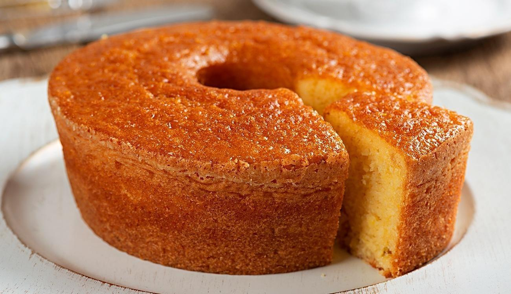

Bolo de Fubá
Ingredientes:
3 ovos inteiros,
2 xícaras (chá) de fubá,
1/2 copo (americano) de óleo,
1 colher (sopa) de fermento em pó,
2 xícaras (chá) de açúcar,
3 colheres (sopa) de farinha de trigo,
1 copo (americano) de leite.
Modo de preparo:
Em um liquidificador, adicione os ovos, o açúcar, o fubá, a farinha de trigo, o óleo, o leite e o fermento, depois bata até a massa ficar lisa e homogênea.
Despeje a massa em uma forma untada e polvilhada.
Leve para assar em forno médio 180 °C preaquecido por 40 minutos.
Torta de Frango
Ingredientes:
Recheio:
500 g de peito de frango sem pele,
4 colheres (sopa) de óleo,
1 cebola picada,
1 xícara (chá) de ervilhas,
pimenta-do-reino a gosto,
1/2 litro de caldo de galinha,
1 dente de alho amassado,
3 tomates sem pele e sem sementes,
sal a gosto.
Iorgute
ingredientes:
1 litro de leite,
1 iogurte natural.
Modo de Preparo
Ferva o leite, espere amornar, mas não deixe ficar frio.
Misture o iogurte junto ao leite morno, e coloque num recipiente médio ou grande (o equivalente a 1 litro) e deixe descansar de 12 a 24 horas.
De vez em quando mexa para ver como ficou a consistência.
Depois coloque na geladeira e sirva acompanhado com granola, quick de morango, ou algo de sua preferência.
Ele não fica azedo, como os iogurtes feitos com os "bichinhos" e fica ótimo!.